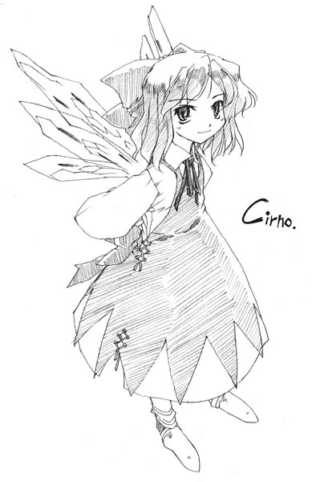

Fairies
Embodiments of Mother Nature
Main info
Usual threat level: Low
Frequency of encounter: Extremely high
Variety: High
Places likely to be encountered: Anywhere
Times likely to be encountered: Anytime
Characteristics
The true identity of natural phenomena themselves.
Fairies live in such phenomena where it gets cold and hot, rain falls and wind blows, grass grows and flowers bloom.
They come in various shapes, but many of them are humanoid with wings like those of insects like butterflies and dragonflies.
Their height is uniformly small, from the degree where they can fit in the palm of one's hand, up to the size of a child below ten years of age. There is hardly any fairy outside of this scope.
They live wherever there is nature.
You can confirm their existence anywhere in Gensokyo.
They especially prefer active places, so when humans and youkai gather you can probably spot lots of them.
On the other hand, in gloomy places their numbers decrease.
They are a kind of youkai you frequently can see even in human villages.
Fairies are active at all hours, so you can probably encounter them both at daytime and in the night.
They don't seem to follow any manner of law or code.
Also, an individual fairy is short-lived, but they immediately resurrect in the same shape.
Even if they suffer large injuries so that their bodies are in pieces, they heal immediately.
In a stricter sense, fairies can't die.
Therefore they take reckless action, without fearing death.
Since their concept of death appears to differ from that of humans, it is also said that they are simply foolish.
Fairies don't actually need to eat, but they see the way humans enjoy their meals and copy them, eating the same things.
They eat anything which humans do.
They especially like to sneak away that which humans are planning to eat.
Potential Harm
Pranks on a Whim.
They all like pranks.
If they catch sight of a human walking somewhere, they make them lose their way.
When you're cleaning, they'll raise the wind to send all your gathered dust flying.
When you are not looking, they put salt in your tea.
Without thinking of the consequences, they disturb the actions of whomever they see.
There are also occasionally pranks that go too far, such as when you get pushed off a cliff, or when your back is set on fire, so it is necessary to be cautious.
Countermeasures
When you walk down the road while thinking about something else, you lose your way.
When you're absorbed in conversation with a friend, your bags are carried away when you're not looking.
Things like these are sometimes thought to be caused by fairies.
The people that most easily get pulled into pranks are those that are uncautious and prone to being preoccupied with other things.
Fairies won't go near cautious people.
Therefore, if you usually pay attention to your surroundings, you should be fine.
But if you were to be subjected to a prank, what should you do?
The truth is that while fairies are reckless, they don't like fighting much at all.
When a human notices the prank, the fairies will probably run away as fast as they can.
If you were to be successful in catching one, you can freely vent your anger on it since they're not very strong.
A grown human should win easily.
However, there are also the occasional exceptions where without doing any pranks, they just suddenly attack.
At such times you must be careful.
That is because there is a possibility that it is a warning for something.
Especially when fairies aggregate in large numbers or start clamoring, there is a possibility that there is an unbelievably powerful youkai lurking about nearby. Therefore, you must be careful.
At such times, I think it's best if you just quietly head back home.
Cirno
Ice Fairy

Ability: Manipulation of cold air
Threat level: Low
Human friendship level: Normal
Main place of activity: The Misty Lake
Close to the lake, there are times when the temperature lowers drastically even in summer.
A fairy you are likely to encounter at such times is this ice fairy.
Among the fairies around the lake she has a leader-like presence, and is stronger than the other fairies.
She belongs to the more belligerent variety of fairies, and so it is necessary to be careful.
She is quite short and dressed in blue with wings of ice.
She has the ability to manipulate the cold.
Being able freeze small objects instantly, she is a bit more dangerous than regular fairies.
She emits cold air constantly, so her vicinity is always chilly.
Since where she lives is totally unknown, there is no way of telling how she spends her everyday life.
Not just Cirno's, but all fairies' homes blend into nature, preventing them from being seen by humans.
Eyewitness Reports
I saw her freezing a part of the Misty Lake's surface and sleeping defenselessly on the ice.
I saw her sleeping sloppily next to the lake. The surrounding flowers were frozen.
Since there are many other sightings near the Misty Lake as well, it is presumed that is where her home is located.
It is possible that she has a house in underwater.
I saw frozen frogs in the rice fields. I think this is the work of fairies
An ominous prank. There's little direct harm, but still...
When I pulled in some fish from the Misty Lake, it was already frozen. That was a real surprise, but the fish kept a long time, and was delicious.
And here I thought that no humans fished at the Misty Lake...
There is the danger of other youkai appearing in that area, so inexperienced people would do best in not copying this example.
Countermeasures
If it suddenly gets cold, there is a possibility that the ice fairy is nearby.
At such times you should be obedient and flee, or look for the shape of the fairy.
Fairies usually do nothing and keep their distance when they understand that they are noticed.
Since Cirno is easily noticed, I assume that as long as one is not very careless there is little risk of being injured.
Still, if you are to pass through place where she seems to be around, what's the best way of doing it?
She's weak against fire from torches and other objects too hot to touch.
If you're holding a torch to start with she probably won't go near.
Since she can freeze things she touches instantly, refrain from touching her even if she is asleep.
There is a risk of frostbite.
If by any chance Cirno should attack, just start to talk calmly about anything, and when she shows interest it is a good time to ask her a riddle.
When you do that, she will start to think of the answer, and that is a good opportunity to escape.
No matter how simple the question, she can certainly not answer it.
Lily White
Fairy Herald of Spring
Usual threat level: Low
Ability: Announcing the arrival of spring
Threat level: Extremely Low
Human friendship level: High
Main place of activity: Varies
When it is spring, humans, youkai and ghosts suddenly become more active. In fact, there are few who do not.
The fairy who symbolizes this activity is the fairy who bears spring, Lily White.
Lily White notices the trivial changes that normal humans don't notice, and tells all living things that have been in deep hibernation during the winter that the season of awakening has come.
After the passing of this fairy, everything becomes wrapped in the joy of spring.
Her height is quite low, and she has many thin wings.
She is not agressive, and even if you come across her, her threat level is low.
However, disturbing her while she is conveying her message would not be wise.
This is when this fairy is at her strongest.
Like other fairies, where she lives is unknown.
And she has rarely been seen during any season other than spring.
Because of that, Lily has become synonymous with the season of spring.
Eyewitness Reports
The snow falls
Is she here yet?
The white mountain
Searching for signs of
The Fairy Herald of Spring
The Fairy Herald of Spring referred to in this poem is Lily White.
She always appears from the west and disappears toward the mountain, but there is no instance in which she has been seen going back the other way. Where in the world does she live?
Perhaps the reason that she's never seen returning from the mountain is that, each year, she's eaten by the mountain youkai and stops announcing spring.
My child caught her. Perhaps because she immediately said "Let me go!" and my child promptly let her go, there fortunately wasn't any damage.
This fairy isn't the sort that would usually injure humans, but it's generally safer not to get involved with non-humans.
Countermeasures
If you don't do anything to her, there's no real danger.
In fact, catching sight of her is a good omen.
She simply wants to celebrate the fact that spring has come.
If she happens to attack, it's possible that she's just excited, so the best course of action is to leave the area.
This fairy won't be able to leave any place that is turning to spring.
If you get away from her, there's no need to worry that she might chase after you.
In fact, it could be interesting to set out bait in order to tame her.
If you prepare some flower seeds for her, she'll gladly make any nearby flowers bloom.
Because of this, she's a fairy who's very popular with florists.
Sunny Milk
Mischievous Sunlight

Usual threat level: Low
Ability: Ability to refract light
Threat level: Low
Human friendship level: Normal
Main place of activity: Around the Forest of Magic
There are times when you get lost even on roads that are not particularly long.
And in some severe cases, you return back to where you came from.
When this happens, eight or nine times out of ten, you would be right to think that it is the work of a fairy.
Sunny Milk, in particular, is a fairy whose specialty is making people lose their way.
Since it is possible to change how the environment looks from reality through refracting light, it can fool humans.
Also, as she can hide herself behind this diffraction, it can be difficult to capture her.
Her stature is quite short, and she possesses thin, insect-like wings.
She's the type of fairy who plays terrible pranks on humans but gets away at full speed when they notice her.
Fairies like this won't approach humans that are highly cautious.
If you don't want to get involved with them, you must behave as if always thinking of the possibility that a fairy is lurking nearby.
Also, she rarely acts alone. She usually moves with a group of three.
It's said that she lives inside a huge tree in the Forest of Magic, but the precise location is unknown.
Basically, a fairy's dwelling area can't be spotted by humans.
Eyewitness Reports
I saw her basking in the sun on top of my roof. When I poked her, she ran away in a hurry.
She was sleeping at the side of the road. She looked like she was hurt, but when I poked her, she ran away in a hurry.
She has been seen basking in the sun a great number of times.
And, as at many of these times she looked injured, it can be thought that, for a fairy of sunlight, exposure to the sun is the equivalent of medical treatment for injuries.
I was walking, when suddenly the ground disappeared, and I fell off a cliff. I thought I was going to die.
Occasionally, the pranks become dangerous. Be careful.
I saw the rain bending in front of me as it fell.
It can become easier to spot the light diffraction when it's raining.
It's less likely for you to lose your way when it's raining than when it's sunny.
Countermeasures
In any case, you have to be careful when you walk.
There is the danger of the road in front of you suddenly turning into a river.
Fairies will avoid attentive humans, and dogs with acute senses.
If you are in a hurry, you should bring a dog with you.
There is no danger in confronting her, as she will immediately run away. However, even if you want to punish her, it's almost impossible to catch her.
If you fall victim of a prank, you can only curse your carelessness.
She's extremely curious, so an experienced person may be able to successfully set a trap for her.
She's also apparently very fond of delicious foods, and she frequently tries to slip into feasts by hiding herself with optical illusions.
If you happen to spot her when she's distracted by the food, you have a chance to vent your anger on her.
Luna Child
Silent Moonlight

Ability: Ability to muffle sound
Threat level: Extremely low
Human friendship level: Average
Main place of activity: Around the Forest of Magic
I believe you might have had an experience in which, during a windy day, the wind's sound suddenly vanished, even though the wind hadn't stopped, and then soon after the sound came back again.
When this happens, eight or nine times out of ten, you would be right to think that it is the work of a fairy
Fairies are beings that can't harm nor benefit humans.
Their pranks don't necessarily cause direct harm to people.
Luna Child has the ability to silence the sounds around herself.
This in itself can't cause much harm, but she often joins up with other fairies, particularly Sunny Milk and Star Sapphire, carrying out their pranks as a trio.
Her stature is quite short, and she possesses thin, insect-like wings.
Out of the red, white and blue trio of fairies, the white one is Luna Child.
Out of the three fairies, she might be the dumbest one, or maybe she just relies too much in her ability to make sound vanish that she's often the only one who fails to escape.
It seems that when her ability is used along with Sunny Milk's light diffraction, it can hide both form and sound, producing a truly fearsome stealthiness. But even so, they are still fairies, after all.
They are not very smart.
Eyewitness Reports
I often see her tripping while walking down the road. She's kinda dull.
Even though she could walk without a sound, she was tip-toeing
One of the characteristics of stupidity.
Frankly, you might not even feel like punishing her any more.
I saw her flying around by herself in the middle of the night.
She's more active at night, so that's when she's most frequently sighted.
On top of that, she will begin to move independently of the others.
Maybe she's in a particularly unusual class of fairies.
She steals a lot of coffee beans. I wonder what I could do about it.
With no sounds to expose them, it's difficult to guard your belongings from sneaking thieves.
But a counter-measure will be mentioned ahead.
Countermeasures
Even though she can cause little real damage, she basically acts with other two, so the same countermeasures mentioned for Sunny Milk can be employed.
Also, out of her solitary pranks, sneak thievery is often reported.
To counteract this, the most reliable method is to be always making sound.
When this fairy gets close to anywhere there is noise, you will know she is there because it will become silent.
That means she won't get caught if she doesn't use her ability, but being a fairy, she will be unable to realize this.
She has associated silencing her surroundings with her thefts. She won't think of doing it any other way.
Star Sapphire
Pouring Starlight

Ability: Ability to detect movement
Threat level: Extremely low
Human friendship level: Average
Main place of activity: Around the Forest of Magic
When looking at the stars covering the night sky, it may sometimes seem that one is surrounded by the eyes of countless beasts or youkai.
And there is a fairy with eyes that can survey as far as the light that falls down from the stars.
That is the starlight fairy, Star Sapphire.
She rarely attacks or disturbs humans, but she mostly causes trouble by helping with other fairies' pranks
Her stature is quite short, and she possesses large, butterfly-like wings.
As this fairy is very attentive to movements, you will soon be found if you try to approach her.
Capturing her is extremely difficult, and she is rarely sighted alone.
Normally, she is seen in the company of Sunny Milk and Luna Child.
Eyewitness Reports
I caught this huge butterfly in the bird-warding nets.
She probably can't notice things that don't move.
Since she has butterfly wings, you could imagine her looking as if caught in a spider's web.
I saw the ice fairy and the light fairies having a fight. The blue one was just looking and laughing from below.
Fairies are very self-centered, so they easily come into conflict with each other.
In this case, as the ice fairy is used to fighting, she would likely win by herself even against 3.
In addition, Star Sapphire always keeps calm and avoids fighting so much it can be hard to tell on what side she is.
Countermeasures
Even though she cannot do a great amount of direct damage, she basically acts with with other two fairies, so the same counter-measure mentioned for Sunny Milk can be employed.
However, when she is on observation duty for the other fairies, she can be a threat.
Because even if you try, you can't elude her ability.
The best and most reliable counter-measure against it is to use a separate creature.
Star Sapphire's ability can't distinguish between a human and a similarly-sized animal.
So, if you slip into a herd of animals and move along with them, she might not even notice you.
In fact, this could be an interesting game as well.
By using animals as decoys, you can lure out Star Sapphire and the others, and catch them at that time.
In other words, this would be fairy-fishing